Programming Languages: C, Java [intermediate], Python [intermediate], HTML, CSS, JavaScript, dart [basic], PHP
Tools: Figma, git, XAMPP, Canva, VS Code, Firebase, Flutter
Platforms: Windows, Linux
Projects
Career Guidance Application
Tools used Figma
Contact management
Programming languages used C Language
Tools used Visual Studio Code
Netflix Clone
Programming languages used HTML, CSS, JS and PHP
Tools used Visual Studio Code and XAMPP
TripMitra
Programming languages used HTML, CSS, JS and PHP
Tools Visual Studio Code and XAMPP
Attendance Management System
Programming languages used HTML, CSS, and JS
Tools Visual Studio Code and Firebase
Devops Team Website
Programming languages used HTML, CSS and JS
Tools used Visual Studio Code
CICADA
Programming languages used dart and JS
Tools Visual Studio Code, Flutter and Firebase
Attendance Management System
Programming languages used HTML, CSS, JS and PHP
Tools Visual Studio Code and XAMPP
Devops Team Website
Programming languages used HTML, CSS and JS
Tools used Visual Studio Code